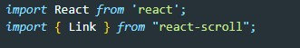
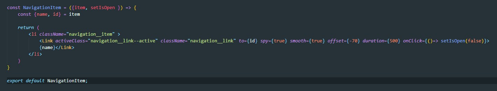
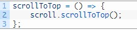

Плавный скролл осуществляется с помощью библиотеки react-scroll. Для установки вводим в консоле команду
npm install react-scrollТеперь в сомпоненте где будем использовать якорные ссылки импортируем библиотеку
import { Link, animateScroll as scroll } from "react-scroll"; Определив все импорты, теперь мы можем обновить элементы навигации, чтобы использовать компонент «Link». Этот компонент содержит несколько свойств.
Пример:
Этот пакет также предоставляет некоторые функции, которые можно вызывать прямо, такие как, «scrollToTop», «scrollToBottom» и т. д., а также различные события, которые вы можете обрабатывать. Например, как правило, логотип приложения в панели навигации ведет пользователя на главную страницу или в верхнюю часть текущей страницы. В качестве простого примера того, как вызвать одну из этих функций, я добавил обработчик кликов для изображения бренда в панели навигации, чтобы вызвать прокрутку обратно в верхнюю часть страницы, следующим образом
